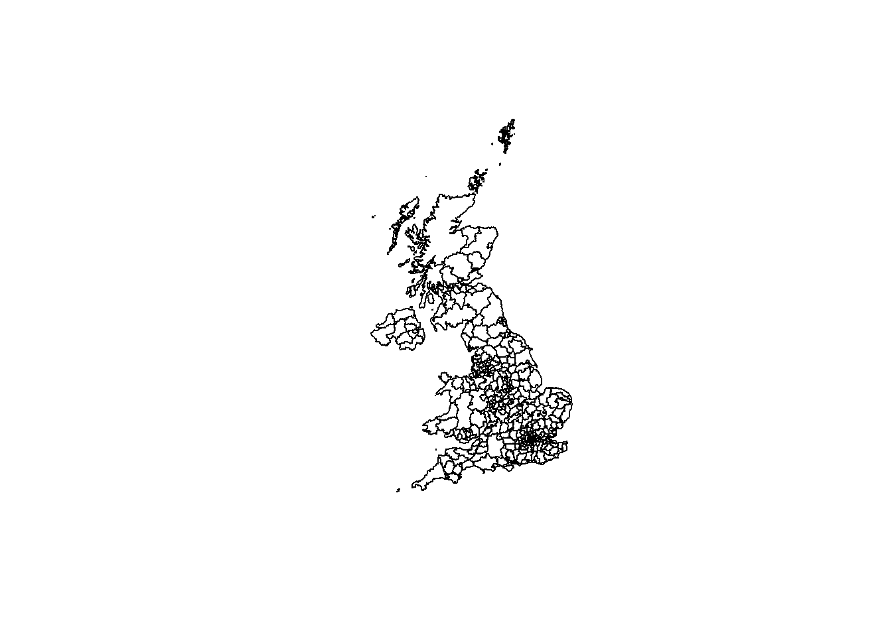
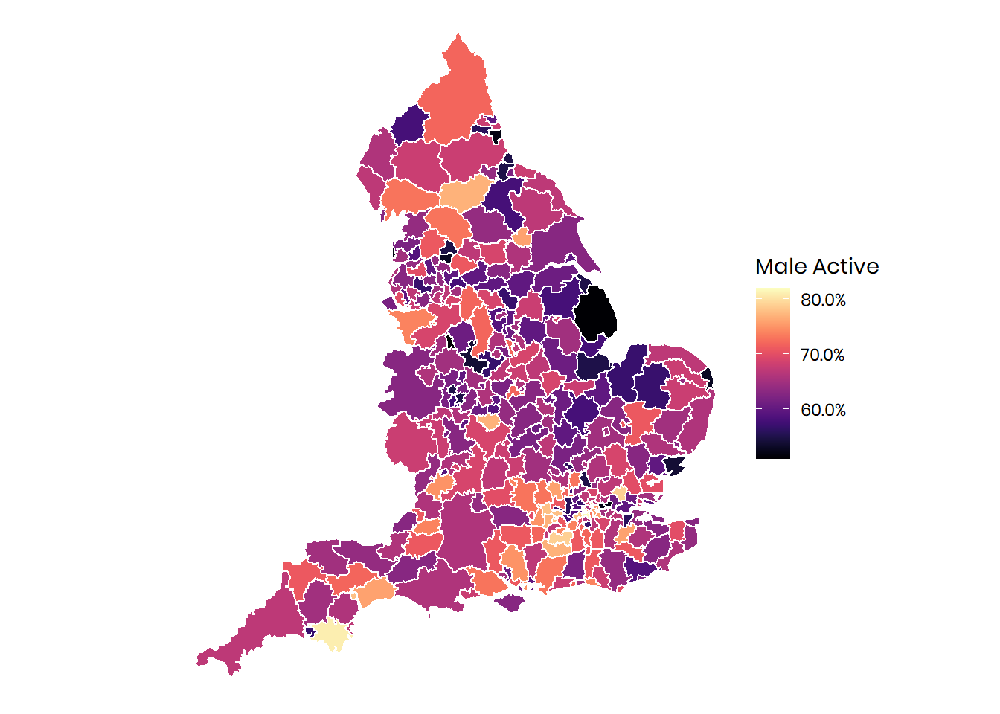
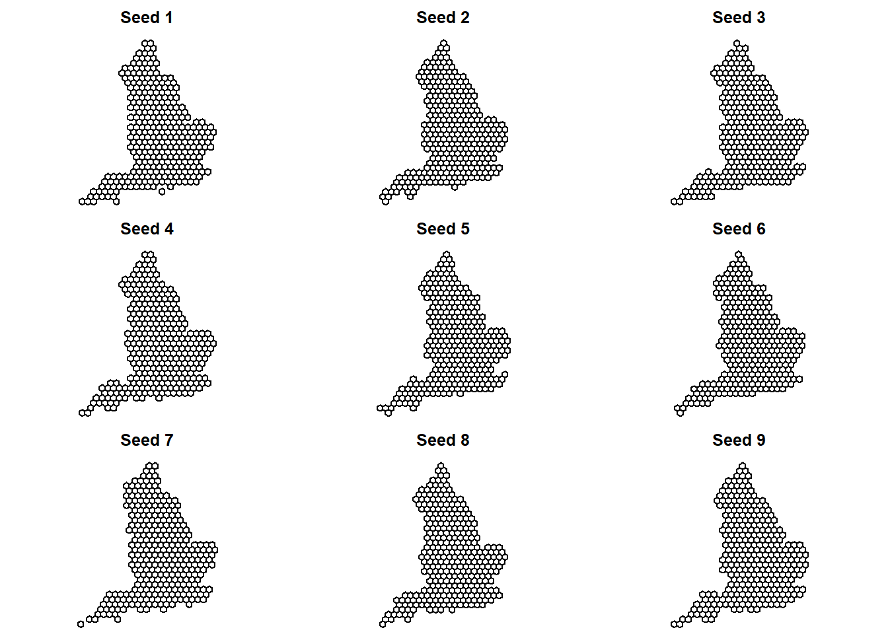
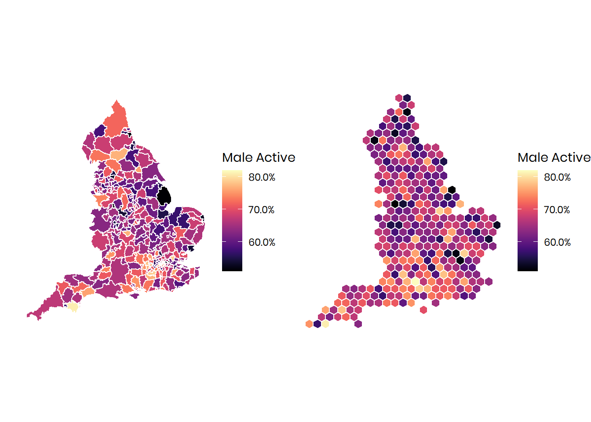

This tutorial will summarise an approach to creating a hexagon map. A hex map is a good way to show geographic units (in this case Local Authorities) with equal visual weight. One of the benefits of hex maps are that they avoid distortion by size, which is why they are a popular means to visualse election results.
There are comprehensive instructions outlined here to create a hex map using R. I have replicated that approach (with a few tweaks and updates) below.
library(tidyverse) # multiple packages including ggplot
library(extrafont)# for Sport England house font
library(scales) # for percentage function
library(viridis) # for colours
library(gridExtra) # to arrange multiple plots
library(geogrid) #reading and cleaning
library(broom) # to put shapefile into a dataframe format
library(hexbin) # useful package for plottingSee the tutorial on reading in shapefiles to merge the data you want to plot with boundary data. You can check the boundaries with the plot function.

This will let us check the spatial data is correct and everything has worked.
# plot the map
plot_1 <- ggplot(LAD_shp_data_tidy, aes(long.x,
lat.x,
fill=Male.Active,
group=group)) +
geom_polygon(col="white") +
scale_fill_viridis(option="magma", name = "Male Active",breaks = 0.1*0:9, labels = percent(0.1*0:9)) +
coord_equal() + theme_void()+
theme(text = element_text(family = "Poppins"))
plot_1
By testing different seed numbers we can generate a range of hexagon layouts - we can then select a version for use in the final map.
LAD_shp_details <- calculate_grid(LAD_shp_data) # create the grid. This may take a while
par(mfrow=c(3,3), mar = c(0,0,2,0))
# loop to create 9 versions
for (i in 1:9){
new_cells <- calculate_grid(shape = LAD_shp_data, learning_rate = 0.03, grid_type = c('hexagonal', "regular"), seed = i)
plot(new_cells[[2]], main = paste("Seed",i, sep=" "))
}
Choose your favourite version and generate the grid.
We can look at our original choropleth and our new hexagon map side by side.
# generate plot
plot_2 <- ggplot(resulthex, aes(long.x,
lat.x,
fill=Male.Active,
group=group)) +
geom_polygon(col="white") +
scale_fill_viridis(option="magma", name = "Male Active", breaks = 0.1*0:9, labels = percent(0.1*0:9)) +
coord_equal() + theme_void() +
theme(text = element_text(family = "Poppins"))
# arrange plot with comparison to the original
grid.arrange(plot_1, plot_2, nrow=1, ncol=2)